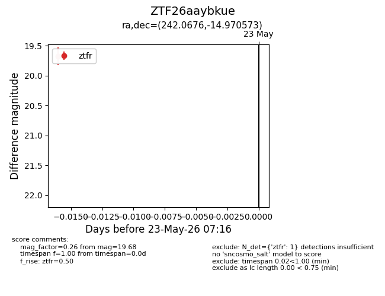
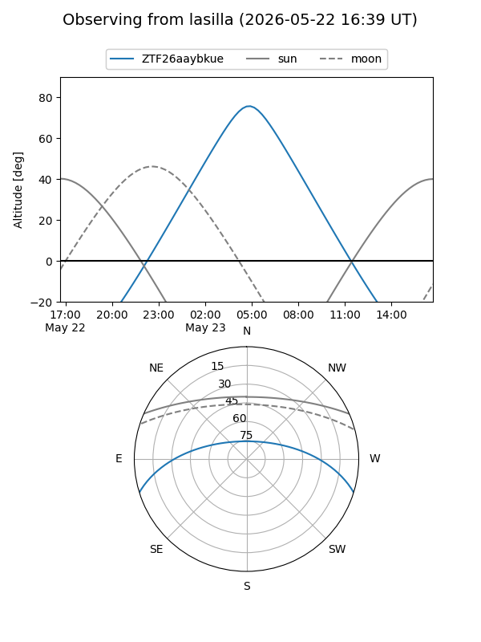
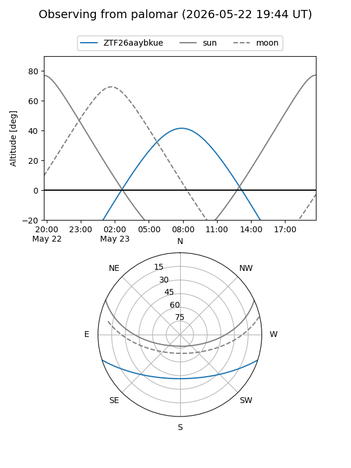

ZTF26aaybkue
Target ZTF26aaybkue at 2026-05-23 07:18
Aliases and brokers:
lsst-FINK: link
lsst-Lasair: link
lsst-ALeRCE: link
ztf-FINK: link
ztf-Lasair: link
ztf-ALeRCE: link
alt names
ZTF26aaybkue (ztf,fink_ztf)
Coordinates:
equatorial (ra, dec) = 242.0676,-14.97057
equatorial (HMS+DMS) = 16:08:16.23,-14:58:14.06
galactic (l, b) = (357.6403,+26.35391)
Flags:
Photometry:
last ztfr=19.68
1 ztfr detections
Lightcurve

Visibility


Additional plots